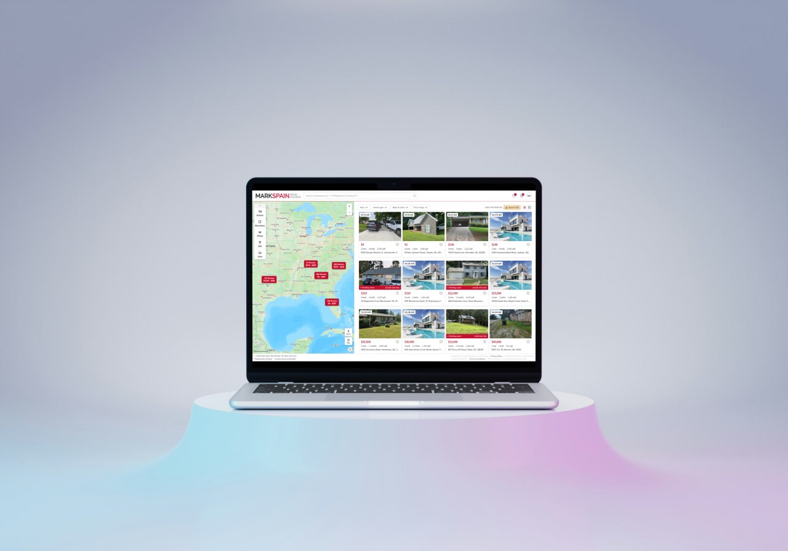
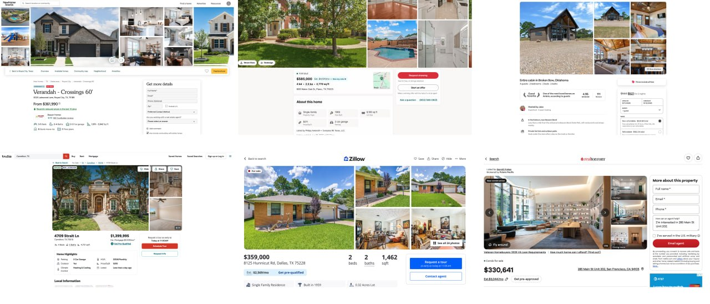
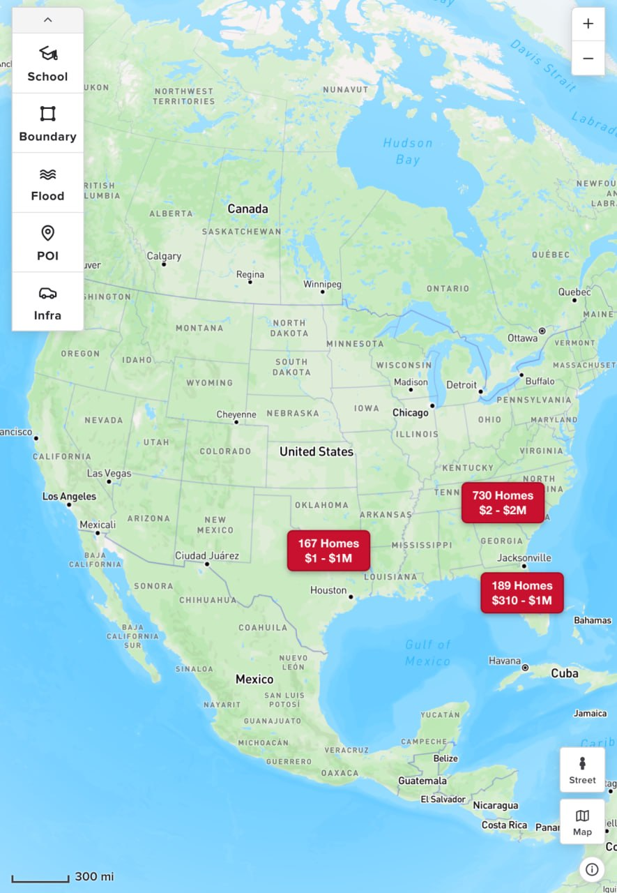
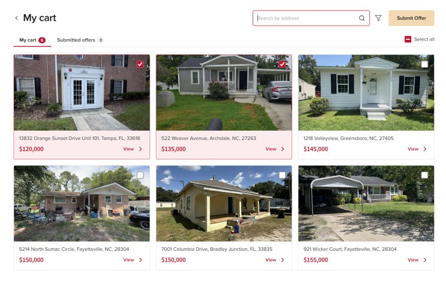
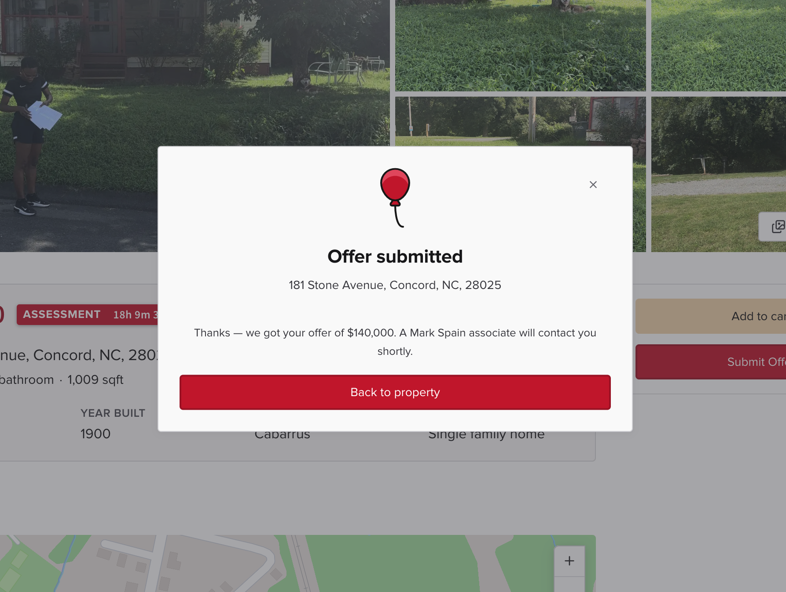
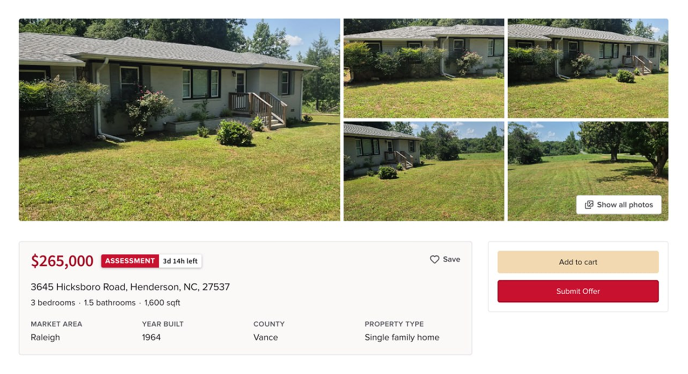

Mark Spain Real Estate Closed Marketplace
A private B2B marketplace built for institutional partners to purchase Mark Spain's acquired homes at a discounted rate — designed to handle 50,000+ listings with rapid per-property turnover. Currently in beta.

Business Context
A Private Acquisition Channel for Institutional Buyers
Mark Spain Real Estate is a high-volume homebuying company that makes quick-cash offers directly to sellers. To accelerate inventory turnover, their leadership wanted a private B2B marketplace — a platform where vetted institutional partners, firms like Invitation Homes, could browse available properties and submit purchase offers at a discounted rate before they hit the consumer market.
Each property carries a fixed acquisition window. Miss the deadline, and the property moves to Mark Spain's consumer-facing website. This urgency-driven model defined the product's design priorities from day one. The scale was significant: Mark Spain planned to list 50,000+ homes through this platform — a level of inventory and turnover that made off-the-shelf solutions non-viable and demanded purpose-built software.

Competitive Research
Every Existing Platform Was Built for Owners, Not Analysts
Without access to direct user interviews, competitive research was my primary design input. I studied 15+ real estate platforms: from consumer-facing sites like Zillow and Redfin to investor-specific platforms like Roofstock.
The finding was consistent across all of them: virtually every platform I reviewed was optimized for the owner-occupant — a buyer evaluating one property at a time, with no time pressure, and fewer financial analytics. The institutional analyst workflow was the opposite: evaluating many properties quickly, filtering by financial signal, and moving toward submitting an offer with minimal friction.
Key competitive insight: No existing platform was built for how an institutional analyst actually works — high volume, time-pressured, and offer-driven. Mark Spain's marketplace couldn't borrow from existing patterns. It needed to be purpose-built.

Design Challenge
Speed vs. Depth for Expert Users Moving Fast
The core tension: institutional analysts need enough data per property to make a confident offer decision — but they're evaluating dozens of properties at a time, often in a single session. An interface that surfaces every detail for every property slows them down. An interface that hides too much creates hesitation that delays offers.
The case for depth: Analysts are making financial commitments on properties they've often never visited. Without sufficient data — location context, flood risk, school zones — they won't commit. Confidence requires completeness.
The case for speed: Analysts managing a pipeline of hundreds of properties can't spend five minutes on each one. An interface that treats every property as equally worth deep-diving actively slows down the people the platform was built to serve.
The resolution: model what 80% of users do 80% of the time, and design the default experience for that — while keeping the deeper layer accessible for when they need it.
Solution
Designing for Analyst Speed Without Sacrificing Trust
Minimizing the Map
Most real estate platforms lead with the map. For this user, the map was a secondary tool — analysts needed just enough location context to confirm a property was in the right area. They weren't exploring neighborhoods; they were validating a data point.
I kept the map accessible in the listing view but de-emphasized it. Deeper geographic overlays — school zones, flood zones, neighborhood data — were available for the analysts who needed them. On the individual property detail view, the map was removed entirely. That screen prioritized the property metrics that drive offer decisions: pricing, condition, timeline, and financials. The map's absence was intentional: if you're on the detail page, you've already decided the location works.

A Cart Built for Bulk Operations
Analysts are expected to submit hundreds of offers and manage an ongoing pipeline of saved properties. The standard e-commerce cart model — one item at a time, linear checkout — was completely wrong for this context.
I combined "My Cart" and "Submitted Offers" into a single unified page, eliminating the need to navigate between two separate tracking surfaces. The page included a collapsible search bar, property-level filtering, and mass selection for bulk offer submission. The submit offer CTA was given the highest visual hierarchy on the page — accent color, prominent placement — and the cart remained persistently accessible from the navigation bar at all times. Analysts could save, review, and submit in a continuous session without losing their place.

Graphical Embellishments Within Brand Guidelines
Mark Spain Real Estate has established brand guidelines — color palette, typography, tone. Rather than override them, I looked for opportunities to add distinctive, product-specific moments of delight that elevated the platform beyond a functional utility.
- Heart animation: When a user saves a property, a heart animates toward the saved items icon in the nav — reinforcing the action while directing attention to where saved properties live. A UX win disguised as a visual flourish.
- Red balloon illustration: Marks the completion of the offer submission flow. A small moment of reward at the most important conversion point in the product.
These moments balanced Mark Spain's existing brand voice while signaling a level of craft that distinguishes a polished product from a functional one.

Outcomes
Currently in Beta
The marketplace is currently undergoing beta testing with invited institutional partners. The platform is invitation-only and not publicly accessible. No analytics data is available yet — results will be added as they come in from the beta period.

Reflection
What I'd Do Differently
- Direct user research from the start. Competitive analysis gave me a useful foundation, but it's a filtered lens. I was designing for institutional analysts without ever speaking to one. Some of my assumptions — around how much time analysts actually spend on the map, or what information they need before committing to an offer — were directionally right, but came from inference rather than evidence. Even two or three analyst interviews at the research phase would have sharpened the brief significantly.
- Earlier alignment on the cart model. Combining "My Cart" and "Submitted Offers" into a single page was a judgment call made mid-project. It was the right call, but it would have been better to pressure-test that decision earlier — the merge had downstream implications for how submitted offer states were displayed and how analysts navigated between active and completed pipelines. Getting stakeholder sign-off on that model before designing it would have saved revision cycles.
- A more systematic approach to the time-pressure mechanic. The countdown window on each property — the core business logic of the platform — was something I designed around but never fully stress-tested in the UI. What does the experience look like when a property has two hours left? Two minutes? Does the urgency translate in a way that prompts action rather than anxiety? These edge states deserved more deliberate design attention than they got.